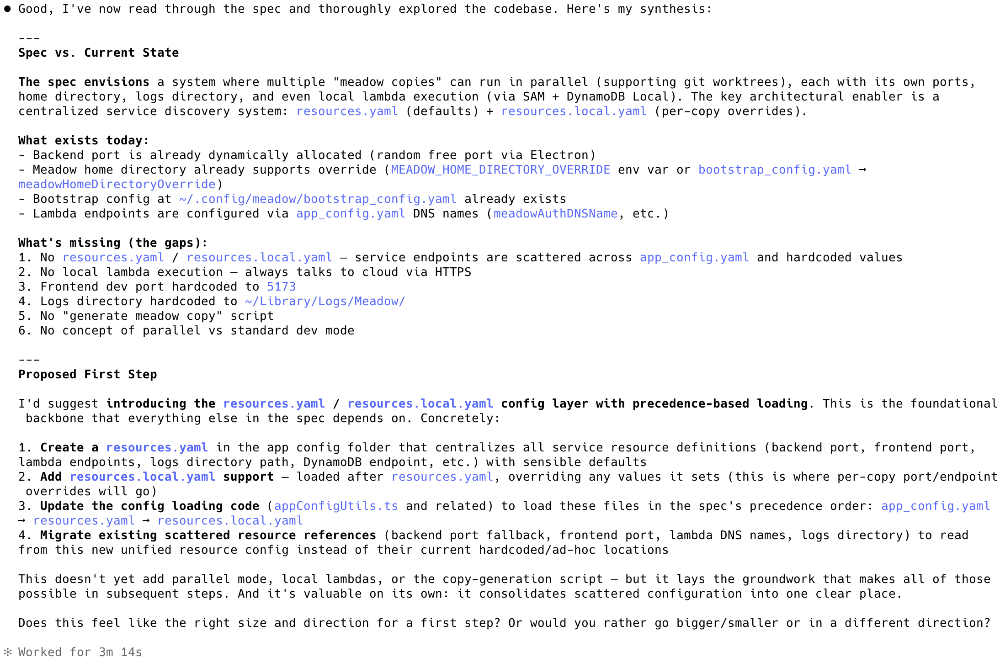

example - describe a desired state and have the coding agent reconcile to it
^ example - describe a desired state and have the coding agent reconcile to it
Background and Context
I found these two blog posts highly influential:
They convinced me that I should adopt true parallel development with git worktrees, a specialized agent -- code merge
I wanted to move to that parallel development approach. To do that, I first specified, in my documentation context graph, what a system like that would look like in meadow parallel development, then I used Meadow to export that sub-graph to a folder in the repo, then I pointed the agent to it.
The actual prompt
I'm going to point you to a spec that I want you to read. It describes a future state that I want to move the system to, but it's a pretty big leap from where we are right now. Here's how I'd like you to approach it:
- I'd like you to read the spec and reconcile it with our current state.
- Then propose some reasonably big step that will move us a nice chunk of the way towards that state. I recognize that we won't be able to move fully to the end state in one fell swoop, because it's likely too much, so we can move iteratively and sort of work our way there.
The spec is called meadow parallel development
The first step the coding agent proposed

What's the logical extension of this?
coding agent breaks plan into issues based off of the document context graph and ralph wiggum completes them